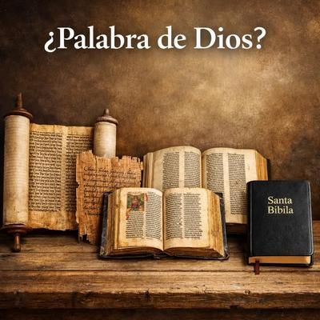

Durante siglos, miles de millones de cristianos han creído que la Biblia es un mensaje divino transmitido con fidelidad desde tiempos inmemoriales hasta nuestros días. Algunos piensan que el relato de la creación debió ser registrado quizás desde los orígenes del cosmos o poco después, y transmitido de generación en generación, sin siquiera preguntarse quién estaba allí mientras eso ocurría, tomando nota o memorizando hasta las palabras creadoras de «Dios». Y creen que los dichos y hechos de Jesús fueron apuntados por algunos de sus discípulos mientras ocurrían o casi inmediatamente después, al mejor y más fiel estilo periodístico.


Para ellos, la Biblia es el libro más sagrado que existe y puede existir, y lo que allí está escrito es perfecto, irrebatible y definitivo, porque según creen, cada palabra fue puesta allí por «Dios», utilizando la mano de hombres elegidos (por cierto, sólo hombres). Por eso usan este libro como «prueba sólida» de que sus creencias son «verdaderas», porque de alguna forma, su libro sagrado las «confirma». Y llegan al extremo de pensar que una persona tendría una vida perfecta, sólo si ajusta sus actos y pensamientos a las enseñanzas contenidas en la Biblia… Por todo esto, para los cristianos la Biblia es «la palabra de Dios.»
¡Pero qué equivocados están! Ellos desconocen que no existe ningún tipo de documento sobre la vida de Jesús que sea contemporáneo a él; que todos son muy posteriores a su crucifixión (de 70, 100 o más años después). Desconocen que los cuatro Evangelios incorporados en la Biblia no son los únicos ni los más antiguos que fueron escritos. Y que el evangelio de Marcos fue entre los canónicos u oficialmente aceptados, el primero en ser escrito, después del año 70, aunque por lo general es datado después del año 100 EC; o sea, por lo menos 70 años después de la fecha en que se supone que fue crucificado Jesús.
Los cristianos no se dan cuenta de que su Biblia no cayó del Cielo ni fue entregada directamente por «la mano de Dios», sino que fue formándose a través de siglos de disputas, controversias, conflictos y altercados teológicos, así como por la selección, edición y transmisión humana de textos, palabras, frases y párrafos. Es, definitivamente, una obra profundamente intervenida por copistas, teólogos y comunidades con agendas concretas.
Entre los siglos I y III de nuestra Era, ni siquiera existía una Biblia cristiana. El «Nuevo Testamento» no existía como libro, sino que circulaban muchos textos sueltos: evangelios (incluso diferentes a los canónicos), cartas (incluso distintas de las de Pablo), y escritos apocalípticos (otros además de Revelaciones).
Es hasta el siglo IV, bajo el pontificado de Dámaso I (en el año 382), que se establece una lista de libros aceptados, excluyéndose muchos textos (evangelios gnósticos y otros escritos también cristianos). Mientras que Jerónimo de Estridón, por encargo del mismo papa, traduce la Biblia al latín (la Vulgata), comenzando por corregir el Nuevo Testamento en Roma en el año 382, y completando la traducción del Antiguo Testamento directamente del hebreo en Belén hacia el año 405. Concilios ecuménicos de fines del siglo IV confirmarían listas similares de textos «canónicos», es decir, aceptados oficialmente (como el Concilio de Hipona del año 393, y el de Cartago del año 397).
¿Se imaginan? ¡Casi cuatro siglos sin que se tuviera un ejemplar definitivo de la Biblia!
Ya durante la Edad Media, la Biblia se copió manualmente durante siglos, produciéndose errores de reproducción, añadidos intencionales e interpolaciones doctrinales. Por ejemplo, se añadió el final largo de Marcos (16:9–20), ya que el original terminaba de forma abrupta, sin apariciones del Jesús resucitado. ¿Resultado? Un cierre «mejorado» que introduce milagros espectaculares y un mandato misionero más acorde con la expansión de la Iglesia. Un final donde se menciona la resurrección de Jesús «el primer día de la semana», su aparición a María Magdalena y después «en otra forma» a dos de sus discípulos. Y posteriormente a los once apóstoles que le quedaban, pidiéndoles ir por todo el mundo predicando el evangelio «a toda criatura», echando fuera «demonios», «hablando lenguas», tomando en sus manos serpientes venenosas, y bebiendo «cosas mortíferas» sin que les pasara nada. Y que culmina con la ascensión, siendo Jesús «recibido arriba en el cielo», sentándose «a la diestra de Dios».
Se añadió también el episodio de la mujer adúltera (Juan 7:53–8:11), con su escena tan citada —«el que esté libre de pecado…»— que no aparece en los manuscritos más antiguos del Evangelio de Juan. Surge varios siglos después, circulando de forma errática, incluso en otros evangelios, antes de «instalarse» definitivamente. Es decir, una de las historias más emblemáticas del cristianismo fue insertada por personas que jamás conocieron a Jesús, y que vivieron en contextos culturales y teológicos muy distintos al suyo.
Y además se añadió lo que se conoce como la «Comma Johanneum», una frase interpolada en 1 Juan 5:7-8, que menciona explícitamente a la Trinidad («el Padre, el Verbo y el Espíritu Santo; y estos tres son uno»). Como sabemos, el dogma de la Trinidad se definió hasta en el siglo IV en dos etapas: en el primer Concilio de Nicea (año 325) y el primer Concilio de Constantinopla (año 381). En Nicea se definió la divinidad de Jesús, y se escribió la parte del Credo que se ocupa de él. Sí, hasta entonces Jesús fue oficialmente «Dios».
Pero los cambios de la Biblia nadie los centralizó, sino que fueron acumulativos, aunque reales y documentados. Así que la conclusión es incómoda: los textos bíblicos no sólo fueron copiados, sino también editados, ampliados y adaptados. ¿Quién lo hizo? —No fueron testigos oculares, ni discípulos directos de Jesús. Fueron copistas anónimos, líderes religiosos y comunidades creyentes que vivieron décadas o siglos después, enfrentando debates doctrinales, tensiones políticas y necesidades pastorales. Y en ese proceso, el texto se convirtió en campo de batalla ideológico, donde se definía qué debía creer la gente.
Pero eso no terminó allí, vino después el Renacimiento, y Martín Lutero cuestionó el canon católico, eliminando los libros deuterocanónicos, es decir, aquellos escritos del Antiguo Testamento incluidos en la Biblia católica y ortodoxa, pero no en la hebrea (como Tobías, Judit, Macabeos, etc.), los cuales Lutero consideró «apócrifos». Por lo que la Iglesia católica respondió en 1546 con el Concilio de Trento, reafirmando su canon oficial. Como resultado, surgieron dos Biblias diferentes: la católica, que contiene 73 libros, y la protestante, que generalmente contiene 66 libros.
Y todavía en la Era moderna (siglos XVII–XXI) eso no quedó así. Ahora se tienen más de 3.700 versiones de la Biblia. Miles de variantes textuales de «la palabra de Dios», en las que muchas Biblias modernas marcan pasajes dudosos y eliminan añadidos evidentes. Y claro, sin mencionar las múltiples contradicciones que contiene este libro sagrado.
¿Podemos decir entonces que hubo siquiera una Biblia original? La respuesta es no. Nunca hubo un único libro completo desde el inicio: hubo múltiples textos, versiones y comunidades, y el canon fue seleccionado, editado y modificado a lo largo del tiempo. Porque obviamente la Biblia no es un documento divino, sino el producto final de decisiones humanas acumuladas durante más de mil años.
Surge entonces la pregunta clave: ¿Cuántas de las creencias actuales de los cristianos —sobre el perdón, la resurrección, la Trinidad o la naturaleza de Jesús— dependen de textos que fueron modificados o directamente inventados por personas ajenas al contexto original?
En fin, cuando la «palabra de Dios» necesita tantas correcciones humanas, tal vez lo más honesto sea admitir que nunca dejó de ser, solamente, palabra de hombres.
[Godless Freeman]
Comentarios
Comments powered by Disqus